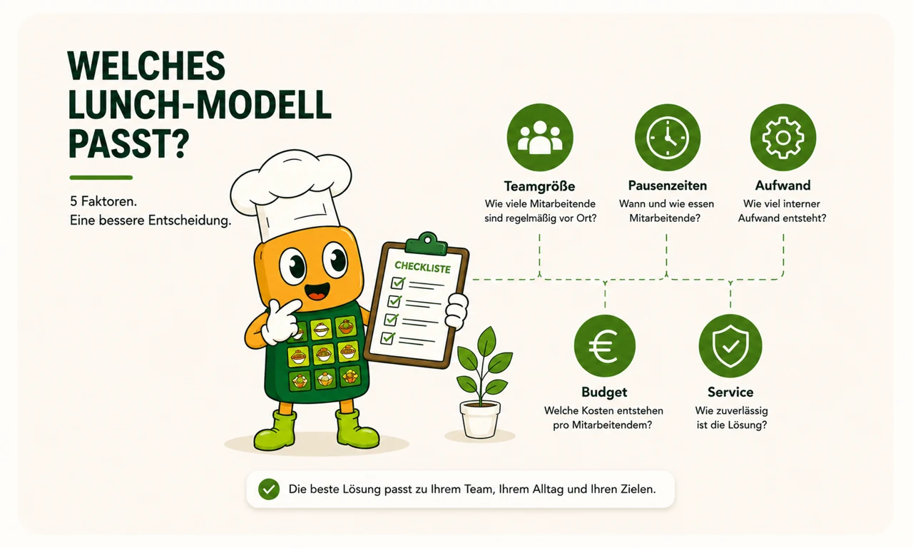
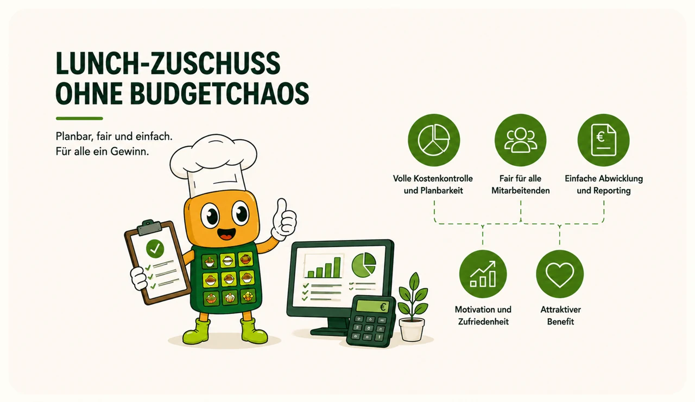
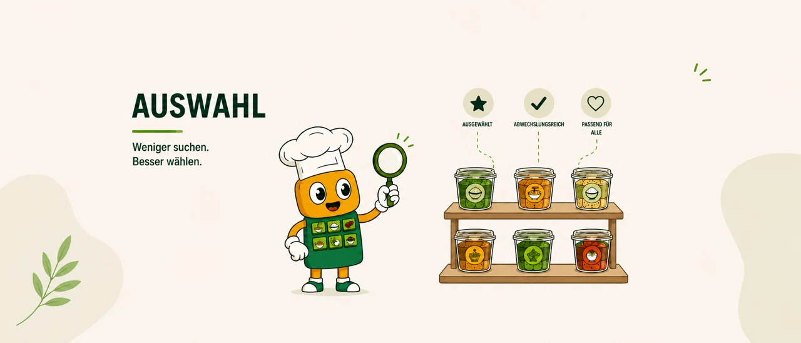
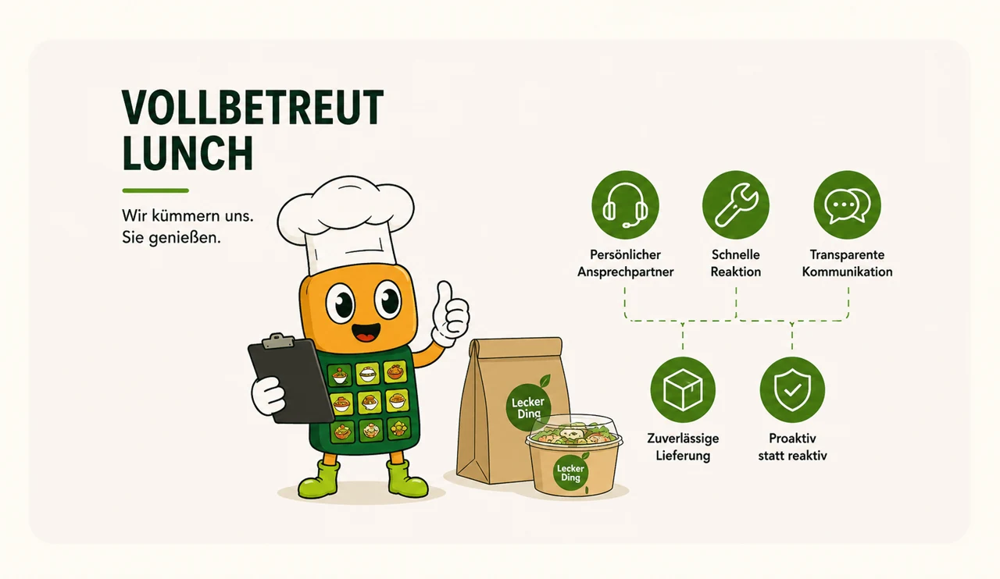
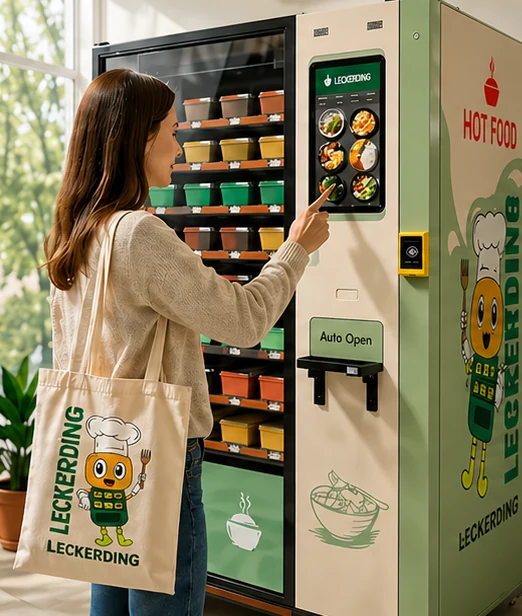
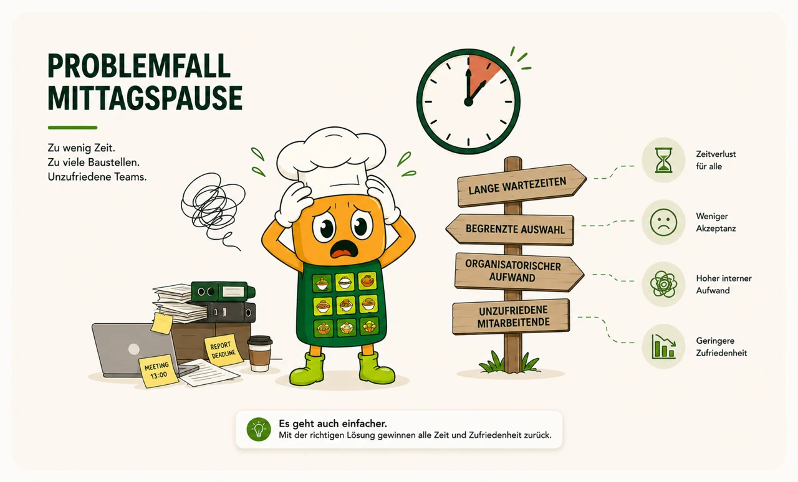

Welches Lunch-Modell passt?
Ein pragmischer 5-Faktoren-Check für HR, Office Management und Operations, um Lunch-Modelle objektiv zu vergleichen und schneller fundierte Entscheidungen zu treffen.
Beitrag lesen ↗LECKERDING JOURNAL
Browse our original articles about workplace meals, practical solutions and the food experience. The articles themselves are in German.
No articles in this date range. Try another date.

Ein pragmischer 5-Faktoren-Check für HR, Office Management und Operations, um Lunch-Modelle objektiv zu vergleichen und schneller fundierte Entscheidungen zu treffen.
Beitrag lesen ↗
Viele Unternehmen würden ihre Mitarbeitenden gerne beim Mittagessen unterstützen, schrecken jedoch vor unkalkulierbaren Kosten zurück. Mit einem klaren Rahmen würde das möglich.
Beitrag lesen ↗
Mehr Auswahl bedeutet nicht bessere Entscheidungen. Warum eine kuratierte Auswahl im Büroalltag oft besser funktioniert als unübersichtliche Vielfalt und wie Unternehmen davon profitieren können.
Beitrag lesen ↗
Der Begriff „vollbetreut“ wird oft verwendet. Doch was bedeutet er im Alltag eines Unternehmens tatsächlich?
Beitrag lesen ↗
Die Idee hinter LECKERDING™ entstand aus einer einfachen Beobachtung: Viele Menschen möchten sich besser ernähren, scheitern im Alltag jedoch an Zeitdruck und fehlenden Optionen.
Beitrag lesen ↗
Viele Teams verlieren täglich Zeit durch unklare Lunch-Prozesse. Warum das HR, Office und Operations betrifft und wie Sie das Problem messbar machen.
Beitrag lesen ↗